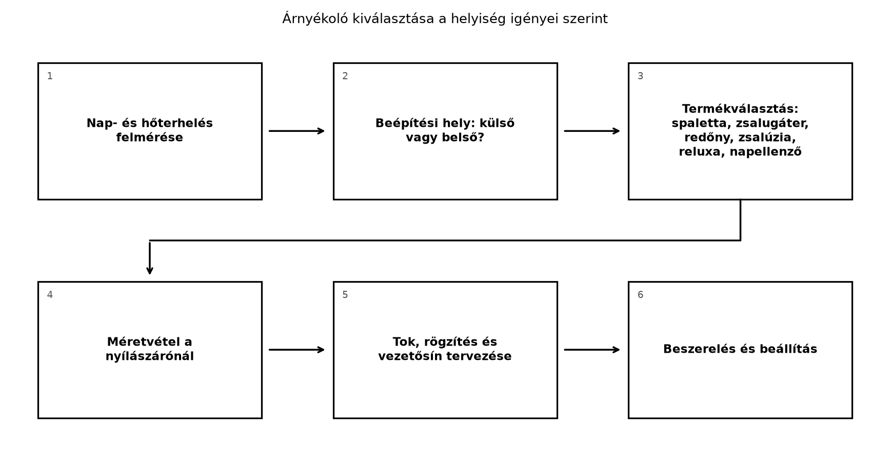

Egy nyugati fekvésű hálószobában kora délután a nap betűz, a szoba túlmelegszik, a függöny pedig nem szellőztet. Ilyenkor az asztalosnak nemcsak szép, hanem árnyékolástechnikailag is jól működő megoldást kell ajánlania: spalettát, zsalugátert, redőnyt, zsalúziát vagy reluxát. A választás műhelyszempontból is fontos, mert a méretvétel, a gyártás és a beépítés hibája később nyikorgó, szoruló vagy beázó szerkezetet ad.
Definíció. A spaletta a nyílászáró elé, csuklósan szerelt, táblás fa árnyékoló. Lehet belső spaletta (a helyiség felől) vagy külső spaletta (a homlokzaton). A külső spaletta véd a napsugárzástól, a beázástól és a betöréstől is.
Definíció. A zsalugáter (műhelyi nevén gyakran zsalu) olyan spaletta, amelynek táblája döntött, egymást átfedő lamellákból áll. A lamellák árnyékolnak, de a levegőt átengedik, ezért a zsalugáter különösen alkalmas hálószobák, nyári konyhák, fürdők szellőztetésére.
Definíció. A zsalúzia külső, állítható dőlésszögű, vízszintes lamellákból álló árnyékoló; a reluxa belső, vékony fém/műanyag lamellás árnyékoló; a redőny összecsukló, felcsévélhető lamellasor vagy műanyag páncél, amely a nyílás elé kerül; a napellenző kifeszített textil vagy fólia, amely az ablak fölé, konzolra szerelve vet árnyékot.
A klasszikus külső spaletta tokból (keretszerkezet), szárnyból (nyíló tábla), betétből (tömör vagy lamellás), vasalatból (pánt, kallantyú, rögzítő) és felületkezelésből áll. A belső spaletta egyszerűbb: a szoba felől csukódik, ezért kevésbé van kitéve csapóesőnek, de ugyanúgy kell a vetemedést kezelni.
Szabály. A kültéri spaletta minden részleténél érvényesítsd a szerkezeti faanyagvédelmet: ferde, vízelvezető élek, cseppentő hornyok, a bütük elfordítása, a víz bejutását megakadályozó hézagok és a kiszellőzés. A vegyi védelem csak ezután jön. (Lásd: Faanyagvédelem: szerkezeti és vegyi védelem.)
A spaletta készítése általában a következő műveletsorból áll:
A zsalugáter szárnyát leggyakrabban keret és lamellasor alkotja. A keret függőleges elemei a szárnyoszlopok, a vízszintesek a felső és alsó keresztlécek (régi szóval: friz). A lamellákat a két oszlop közé, mart nútba vagy cserépbe ültetik, vagy az oszlopok belső oldalára csavarozzák.
Lamellák kialakítása. A lamellák döntötten állnak, tipikus dőlésszögük 35°–45° (tájékoztató érték, a terv szerint). A felső lamella alsó éle takarja az alatta lévő felső élét: ez az átfedés. Az átfedés akadályozza meg, hogy az esővíz és a közvetlen napsugár a lamellák között bejusson. A lamella alsó élére gyakran cseppentő élt marnak, hogy a vízcsepp lecsöppenjen, és ne fusson be a nútba.
Szerkezeti rajz leírása.
Az elölnézeten a szárnyoszlopok (45 × 68 mm) és a felső-alsó keresztlécek (68 mm) között 1064 mm magas lamellasor van; a metszeten a 80 mm széles, 18 mm vastag lamellák 35°-ban lejtenek kifelé, a felső lamella alsó éle (cseppentő él) 15 mm-rel takarja az alatta lévő felső élét. Az osztás (szemléltető méretek, a terv szerint ellenőrizendő). Az interaktív kalkulátorban a szárnymagasság, a keresztléc, a lamellaszélesség, a dőlésszög és az átfedés változtatható (a program a keresztlécet „káva” néven jelölheti).
Recept. Zsalugáter szárny készítése lamellákkal:
Gépbiztonság. A művelet betanított, felügyelt tanulónak szól; védőberendezés nélkül, egyedül, fáradtan ne dolgozz! A marógépen a védőburkolat, a tolófa és a munkadarab-leszorító mindig a helyén legyen; a forgó szerszámhoz kesztyűben ne nyúlj; az elszívást indítsd el. A körfűrészgépen a hasítóék és a fűrész feletti védőburkolat legyen felszerelve; a munkadarabot tolófával vezesd. Poros műveletnél használj FFP-szűrős légzésvédőt (ellenőrizendő: aktuális fapor-expozíciós határérték).
Példa. Egy zsalugáter szárny külső magassága 1200 mm. A felső és alsó vízszintes keretléc (keresztléc) szélessége 68 mm, így a lamellasor rendelkezésre álló magassága . A lamella szélessége . A lamella dőlésszöge . A lamella látható magassága:
Ha a szükséges átfedés , akkor a szomszédos lamellák ennyivel takarják egymást, ezért az osztástávolság a látható magasság mínusz az átfedés:
A lamellák számát úgy kapjuk, hogy a rendelkezésre álló magasságot elosztjuk az osztástávolsággal:
Ez azt jelenti, hogy 34 lamellát építünk be; a maradék kb. 13–14 mm-t az alsó és felső osztás egyenletes elosztásával vagy a keresztléc takarásával vesszük fel. Gyakorlatban az utolsó osztást enyhén módosítjuk, hogy a felső és alsó él esztétikus maradjon, vagy az alsó keresztlécet alakítjuk ki takarásként. Megjegyzés. A pontos dőlésszög és átfedés a terv és a gyártmány adatlapja szerint ellenőrizendő.
A spaletta és a zsalugáter kültéri termék, ezért a felületkezelésnél a fa mozgását is figyelembe kell venni. A faanyagot lehetőleg már szárítva, kültéri beépítésre alkalmas fajtából válaszd. A leggyakoribb hazai fafajok: vörösfenyő, tölgy, esetleg akác; a fenyő külső térben csak megfelelő, kültéri célú felületkezeléssel használható (tájékoztató, ellenőrizendő). A bütüket mindig zárjuk le, mert ott a leggyorsabb a nedvességfelvétel.
A felületkezelés rétegrendje kültéren jellemzően:
A rétegek között mindig a gyártó által előírt száradási időt és csiszolást tartsd be. A felületkezelő anyagok biztonsági adatlapját mindig olvasd el, és szellőzés mellett dolgozz.
Redőny. A redőny a nyílászáró elé szerelt, felcsévélhető lamellasor vagy páncél. A tok rejti a csévélő tengelyt, a vezetősín a nyílás két oldalán vezeti a redőnyt, a gurtni vagy motor mozgatja. A redőny jól zárja a fényt, hőszigetel, de szellőzést nem ad, ezért a szellőzést külön kell megoldani.
Zsalúzia. A külső zsalúzia vízszintes, állítható dőlésszögű lamellákból áll, amelyeket oldalsó vezetőpántok tartanak. A lamellák döntésével lehet árnyékolni, szellőzni, és a kilátást is szabályozni. A zsalúzia szerkezete hasonlít a zsalugáterhez, de a lamellák mozgathatók.
Reluxa. A belső reluxa vékony fém- vagy műanyag lamellákkal készül, a nyílászáró belső oldalán. A lamellák dönthetők, felhúzhatók. Napsugárzás ellen csak a belső oldalon hat, ezért kültéri árnyékoló nélkül a hőterhelést csak részben csökkenti.
Napellenző. A napellenző konzolra szerelt, kihúzható textil vagy fólia, amely az ablak fölé nyúlik, és árnyékot vet. Karbantartása tisztításból és a szerkezet kenéséből áll.
A beépítés során a legfontosabb, hogy a szerkezet a falnyíláshoz illeszkedjen, a szárnyak zárva ne érjenek egymáshoz, és a vasalat elbírja a szárny súlyát. A tokot dűbelekkel, csavarokkal rögzítik, a rést rugalmas tömítőanyaggal zárják. A redőny vezetősínjét függőlegesen szerelik, a csévélő tokot vízszintesen.
Ábra. A következő folyamatábra a megfelelő árnyékoló kiválasztásának lépéseit mutatja.

Az elkészült zsalugáter szárnynál a következőket ellenőrizd:
Egy régi, műemlék jellegű házon a külső spalettákat cserélni kellett. Az asztalos zsalugátert készített vörösfenyőből. A régi spaletta tömör betétje miatt a helyiségekben nyáron megállt a levegő, és a túlmelegedés mellett penészesedés is jelentkezett. Az új zsalugáter lamellái 40°-os dőléssel, 18 mm-es átfedéssel készültek, így a szellőzés megoldódott. A felületet kétszeri pigmentált lazúrral kezelték, a bütüket külön lezárták. A beépítésnél a tokot 8 mm-es szellőzőhézaggal szerelték a falra, így a mögötte lévő levegő kering. A szárnyak azóta sem vetemedtek, és a szoba nyáron is élhető.
1. feladat (A) Sorold fel a zsalugáter szárny fő részeit, és írd le, mi a szerepe a lamellák átfedésének.
2. feladat (A) Miért fontos a bütük lezárása kültéri fa terméken?
3. feladat (B) Egy zsalugáter szárny külső magassága 1000 mm. A felső és alsó keresztléc szélessége 60 mm. A lamella szélessége 70 mm, dőlésszöge 40°, a szükséges átfedés 15 mm. Számítsd ki, hány lamellát lehet beépíteni!
4. feladat (B) Egy redőnyt a nyílászáró elé szerelnek. A vezetősínt 2,10 m magas nyílásnál kell felszerelni. A szerelő a sín felső rögzítését 5 mm-rel a függőlegestől balra tette, az alsót 5 mm-rel jobbra. Mekkora a sín eltérése a függőlegestől, és miért okoz ez problémát? (Ingaóra-szerűen: a sín felső és alsó pontja közötti vízszintes eltérés.)
5. feladat (C) Tervezd meg egy külső spaletta szárnyát egy 900 × 1500 mm-es ablaknyíláshoz! Írd le, milyen fafajt választasz, milyen kötést használsz a keretnél, hogyan helyezed el a pántokat, és milyen felületkezelést alkalmaznál. Indokold a döntéseidet!
6. feladat (D) Készíts technológiai lapot egy zsalugáter szárny készítéséhez! Add meg a gépeket, a beállítási adatokat, a munkavédelmi előírásokat, a műveleti sorrendet és az ellenőrzési pontokat. A technológiai lap legyen kivitelezhető a tanműhelyben.
Önellenőrzés – válaszok
1. feladat megoldása: A zsalugáter szárny fő részei: szárnyoszlopok, felső és alsó keresztléc, lamellák. A lamellák átfedése megakadályozza, hogy a napsugár és az eső a lamellák közötti réseken átjusson.
2. feladat megoldása: A bütü a fa rostjainak vége, ahol a nedvesség a leggyorsabban távozik vagy bejut. Ha nincs lezárva, a fa vetemedik, reped, a felületkezelés is leválik.
3. feladat megoldása:
Rendelkezésre álló magasság:
A lamella látható magassága:
Az osztástávolság:
A lamellák száma:
Tehát 29 lamellát építünk be, a maradék kb. 10 mm-t az osztások között elosztva vagy a keresztlécnél felvéve.
4. feladat megoldása: A felső pont 5 mm-rel balra, az alsó 5 mm-rel jobbra tér el, így a vízszintes eltérés a két pont között . Ez a sín ferdesége, ami miatt a redőny nem fut egyenletesen, zörög, és a lamellák élei kopnak.
5. feladat megoldása (minta): Választott fafaj: vörösfenyő, mert kültéren jól teljesít. Keretkötés: ollós csapozás, vízálló D4 ragasztóval és facsappal. Pántok: három darab, a szárny magasságának felső, középső és alsó harmadában. Felületkezelés: pigmentált, UV-szűrős lazúr, a bütük lezárásával. Indoklás: a vörösfenyő tartós, a csapozás merev, a lazúr megengedi a fa mozgását.
6. feladat megoldása (minta technológiai lap):
Termék: zsalugáter szárny, 600 × 1200 mm külméret,
vörösfenyő (ellenőrizendő: fafaj és nedvesség 12–15 %).
Gépek, szerszámok: asztalos körfűrész, egyengető és
vastagsági gyalu, alsómaró vagy felsőmaró a lamellanút és a falc
marására, csapozó marógép, derékszögelő, tolómérő.
Beállítási adatok: nútmélység 20 mm, a lamellák
dőlésszöge 35° (sablonnal ellenőrizve), lamellaosztás a számítási példa
szerint (ellenőrizendő: terv és gyártmány-adatlap).
Gépbiztonság. A művelet betanított, felügyelt tanulónak
szól; védőberendezés nélkül, egyedül, fáradtan ne végezd. Körfűrész:
hasítóék, tolófa, elszívás. Maró: védőkeret, ellenirányú előtolás,
kesztyű tilos. Védőszemüveg, fülvédő, légzésvédő (faporhoz). Indítás
előtt ellenőrizd a szerszám rögzítését, az elszívást, a
vészleállítót.
Lépések: 1. Szabás hosszra és szélességre ráhagyással.
– Ellenőrzés: méret ± 1 mm. 2. Gyalulás méretre. – Ellenőrzés: szelvény
45 × 68 mm, tolómérővel. 3. Csapozás/fészkelés a keretnél. – Ellenőrzés:
illesztés próbadarabbal. 4. Lamellanútok marása a szárnyoszlopokba. –
Ellenőrzés: nútmélység 20 mm, osztás sablonnal. 5. Lamellák szabása és
élképzése, bütük lezárása alapozóval. – Ellenőrzés: egyforma szélesség
és vastagság. 6. Száraz összeállítás. – Ellenőrzés: derékszög, átlók
eltérése legfeljebb 1 mm. 7. Ragasztás (D4, ellenőrizendő), préselés. –
Ellenőrzés: sehol nincs ragasztóhézag. 8. Csiszolás, felületkezelés. –
Ellenőrzés: a bütük zártak, a felület egyenletes.
A spaletta a nyílászáró elé szerelt, csuklósan nyíló fa árnyékoló; a zsalugáter döntött, átfedő lamellákkal készül, így árnyékol és szellőztet is. A kültéri spaletta szerkezeti védelme a legfontosabb: a vízelvezető élek, a cseppentő élek, a bütük lezárása és a kiszellőzés megakadályozza a vetemedést és a korhadást. A zsalugáter szárny keretből és lamellákból áll; a lamellák dőlésszöge 35°–45°, az átfedés legalább 15–20 mm (tájékoztató értékek). A lamellákat mozgási hézaggal kell beépíteni. A redőny felcsévélhető, a zsalúzia külső, a reluxa belső lamellás árnyékoló, a napellenző kifeszített textil. A beépítésnél a tokot dűbelekkel, a vezetősínt függőlegesen szerelik, a rést tömítik. Továbbvitt eredmény. Az árnyékolók helyes kiválasztását és beépítési elveit a IX. RÉSZ – Szerelés és termékgyártás részben, valamint a vizsgaremek dokumentációjában alkalmazzuk: a méretvétel, a tok és a vasalat illesztése ugyanúgy zajlik, mint bármely épületasztalos terméknél; a kültéri beépítésnél pedig a szerkezeti faanyagvédelem elveit kell érvényesíteni.